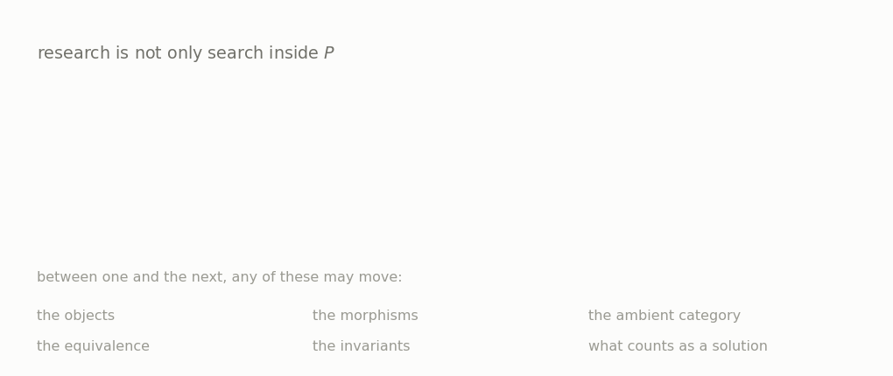
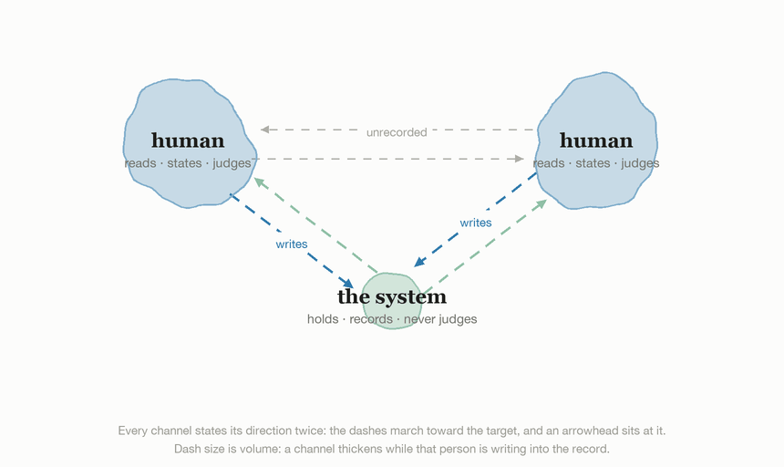
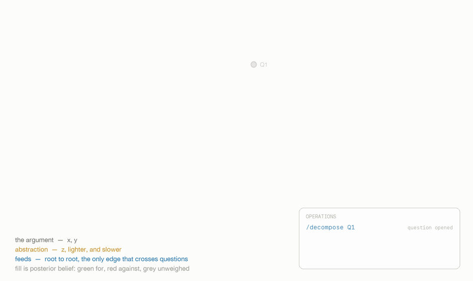

Understanding collaboration, with humans and AI.
Few mathematicians and a set of agents on one conjecture, in a repository that keeps every statement, every referee report and every revision as files.
1How should the practice of mathematics change, now that AI is in it?
- How should we collaborate? Who states, who proves, who judges, and which of those a machine may hold.
- What questions should we work on? A machine that answers cheaply changes which questions are worth asking. Why should we use or not use LEAN?
- What skills should we develop?
2How do we learn the intuition behind human knowledge?
A finished proof records the result and discards the thinking. We want to know whether provenance can carry the thinking instead: which statement moved, on whose objection, and what the author believed before and after.
Four kinds of question, and only the innermost has a method.
| Kind | What is fixed | What is open |
|---|---|---|
| Exercise | goal, route, language, standard | execution alone |
| Problem | goal, language, standard | the route |
| Conjecture | language, standard | the route, and whether the conclusion is even true |
| Research programme | nothing | objects, correspondences, and what would count as success |
The distinction is Simon's — for an ill-structured problem the problem space is constructed while it is searched — and Rittel and Webber's, for whom the formulation of a wicked problem is the problem. Both are in the reading list beside the questions we are asking you.
Design for the practice, not for the solver.
A system built around one person finishing one problem cannot hold the thing we want to study, which is what several people and several agents do to a problem between them.

Three lineages stand behind that picture. Pólya's four steps are the oldest written answer to how is a problem solved, addressed to one student. Newell and Simon separate the task environment from the solver's representation of it, which is what makes the chain $P_0 \to P_1 \to P_2$ a thing you can point at. The Logic Theorist is the first program to run on that distinction: three operators, a subproblem list, and heuristics that cut the search.
Nine objects, and the repository is all of the state.
Each one has a page saying what it is, what it prevents, and where it comes from.
| Object | What it is |
|---|---|
| node | one claim, one directory, and the id is the path |
| DAG | which claim rests on which |
| appendix | every object a proof may invoke, one file each |
| closed world | the appendix, the node's own prerequisites, and nothing else |
| operator | the nine commands that may change the tree |
| role | whether a node carries the argument or corroborates it |
| gate | the checks a run has to pass before it counts |
| history | every dated entry in a node's life, append-only |
| confidence | four signed channels, derived at build time, citable by nobody |


What we do not know about our own machine.
- How do we make any of this interpretable? The record answers
what happened to a node and never why the node is there. The operator
aimed at it is
/why, capped at 300 words and required to answer with a pointer.
What we are asking you to read and write back is
to do, three questions
at twenty minutes each, with a reading list behind two of them; the open
operator is
todo 2. Every number on
this page was counted on 2026-08-08 from tools/stats.py and
from the files on disk. When they matter again, re-count rather than
patch.